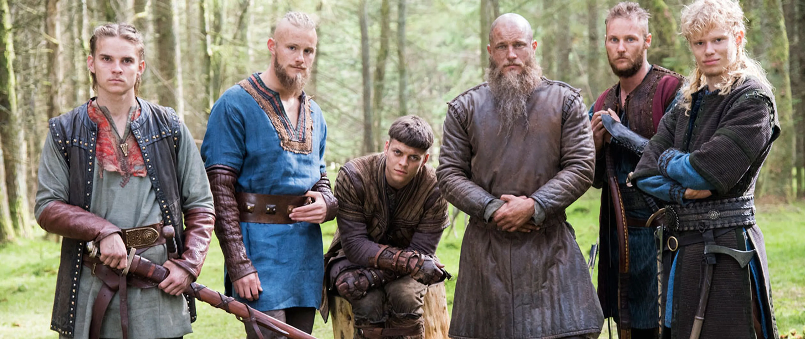

Los vikingos fueron un grupo de exploradores, comerciantes, guerreros y marineros de origen escandinavo que vivieron durante la Era Vikinga. Este periodo se sitúa aproximadamente entre los siglos VIII y XI.
Los vikingos provenían de los países nórdicos de Noruega, Suecia y Dinamarca. Eran conocidos por sus incursiones marítimas en busca de tierras, riquezas y nuevas oportunidades comerciales. Los vikingos colonizaron áreas en Europa, fundaron ciudades y establecieron rutas comerciales a través de los mares del norte.
La cultura vikinga era rica y diversa. Los vikingos practicaban la artesanía, la poesía, la música y celebraban festivales religiosos y tradiciones. Eran politeístas y adoraban a una variedad de dioses, incluidos Odin, Thor y Freyja.
Los vikingos llevaron a cabo numerosas incursiones y expediciones militares en toda Europa, llegando a lugares tan lejanos como el Mediterráneo, Rusia y América del Norte. Su reputación como guerreros feroces y hábiles navegantes les permitió establecer asentamientos y ejercer influencia en vastas regiones.
El legado de los vikingos perdura hasta nuestros días. Su influencia se puede encontrar en la lengua, la literatura, la arquitectura y las tradiciones de las regiones que exploraron y colonizaron. Los vikingos también dejaron una marca indeleble en la cultura popular contemporánea, inspirando libros, películas, series de televisión y videojuegos.
A pesar de su legado duradero, la Era Vikinga llegó a su fin con la cristianización de Escandinavia y el establecimiento de reinos y monarquías centralizadas. Sin embargo, la influencia y el recuerdo de los vikingos continúan vivos en la memoria colectiva y en el patrimonio cultural de las naciones nórdicas.
Vikingo (del nórdico antiguo víkingr) es el principal nombre dado a los guerreros que realizaban incursiones de saqueos, provenientes de los pueblos nórdicos procedentes de Escandinavia, famosos por ser grandes navegantes y por llevar a cabo pillajes y ataques en Europa. Dependiendo del contexto y de la interpretación del autor, puede usarse el nombre para referirse a los incursores de esta procedencia o a sus países de origen. La metonimia ha llevado a que el nombre se siga usando aún hoy en día de forma coloquial para referirse a los países escandinavos. Su lengua era el nórdico antiguo. Si bien existen referencias vagas a pueblos germánicos del mar Báltico y Escandinavia en las fuentes romanas,1 sus ataques y su aparición en la escena política europea cobran relevancia con el saqueo del monasterio de Lindisfarne (793) en el norte de Gran Bretaña, al que pronto siguieron ataques en el resto de las islas y en el continente. Los anales y crónicas de los dos siglos siguientes están repletos de relatos aterradores. En Iberia, saquearon Lisboa, Cádiz, Algeciras y Sevilla, y en general, Galicia, Andalucía, Murcia e islas Baleares.2 Su actuar violento aterrorizó a las antiguas comunidades, que, aunque acostumbradas a la guerra, no tenían forma de prever cuándo habría una incursión y sufrían una carencia de poderes fuertes en los comienzos de la Edad Media. Estos ataques sumados a los de los húngaros y ávaros, a la presión de pueblos eslavos en Europa Oriental y a la de los árabes en el Sur fueron tanto causa como consecuencia de un período de inestabilidad que favoreció la descentralización política del feudalismo. Durante los siglos siguientes, los vikingos y sus descendientes tuvieron gran influencia en la historia europea. En las islas británicas gobernaron durante muchos años hasta ser finalmente derrotados por los normandos, descendientes de vikingos que habían recibido tierras en Normandía (Francia). En Italia fundaron el reino normando de Sicilia e incluso llegaron a influir con sus incursiones en el Califato de Córdoba y en el Imperio bizantino. A través de los ríos del norte intervinieron repetidas veces en el mar Báltico y en Rusia, cuyos primeros estados (la Rus de Kiev) aparecen vinculados a aventureros vikingos. Se suele datar el final del periodo vikingo con la caída del rey Harald el Despiadado, que murió en la batalla del puente Stamford en el año 1066 cuando intentaba tomar posesión del territorio de Inglaterra;3 aunque los historiadores daneses amplían hasta 1085 con el final del reinado de Canuto IV de Dinamarca.4 Si bien la influencia nórdica siguió siendo relevante, la aculturización de normandos en Francia, Inglaterra e Italia, las victorias militares de varios estados como Francia que lograron asegurar las costas y la propia disminución de incursiones escandinavas con la cristianización de Escandinavia supusieron paulatinamente el final de su actividad tal y como se conocía.
El origen de la palabra es discutido. En textos rúnicos se usa la forma fara í víking como ‘ir de expedición’, aunque en textos posteriores como las sagas islandesas implica saqueos o piratería y ya excluye expediciones comerciales. El nombre víkingr alude entre los escaldos a los marineros y guerreros que participan en expediciones de ultramar.5 También se usa como nombre de persona en algunas runas suecas. Hay pocas señales de que el término tuviera connotaciones negativas antes de que terminara la era vikinga. Existen más teorías sobre su origen, algunas bastante improbables. Algunos eruditos han sugerido que la palabra proviene del sajón wic, un campamento militar. Otros sostienen que procede de la frase vik in, que significa 'bahía adentro', refiriéndose así a sus desembarcos; o puede derivar de la palabra vík en nórdico antiguo, que significa 'bahía pequeña, cala o entrada',6 por lo que se puede interpretar como 'el que frecuenta una bahía, caleta o fiordo'.7 Otros opinan que procede de vig (una batalla, aunque es improbable por motivos fonológicos), o de vijka, que significa 'mover o desviarse', haciendo de un vikingo 'el que da un rodeo o se desvía'. Entre las teorías que han ido ganando adeptos entre los eruditos del presente siglo, está la que la hace derivar del término en nórdico antiguo vika, 'milla marina', es decir la distancia que recorre una embarcación antes de que los remeros se cansen y sean relevados.89 Una teoría que ha ido perdiendo fuerza ha vinculado la palabra vikingo como variante de la región geográfica de Viken, bajo el significado 'una persona de Viken'. Según el argumento, el término vikingo simplemente describe a una persona que procede de Viken, y que solo fue durante los últimos siglos que la palabra identifica a los escandinavos de la Edad Media en general.10 Por otro lado, en documentos de la época los hombres procedentes de Viken son llamados víkverir, y en cambio, se llama vikingos a hombres procedentes de otras regiones de Escandinavia, como por ejemplo en las piedras rúnicas de Tóki víking (Sm 10),11 Gårdstånga (DR 330)12 y Västra Strö 1.13 En inglés antiguo, la palabra wicing aparece en el poema del siglo ix Widsith, así como en la historia de Adán de Bremen sobre 1070. Se usaba en la práctica como sinónimo de pirata. La palabra se perdió y no se usa en textos posteriores, siendo viking reintroducido en el Renacimiento vikingo del Romanticismo, que los idealizó y dio pie a la extensión del adjetivo a «religión vikinga», «cultura vikinga» entre otros. En español se introdujo desde el inglés. El nombre hacía referencia a la actividad, no al origen étnico, siendo la extensión del término al pueblo escandinavo, una metonimia moderna. En textos escandinavos, incluso hoy en día, el término se usa normalmente para especificar a los expedicionarios.14 La cuestión de si eran o no una cultura ha sido objetivo de diversos debates. Olaf Ragnusson, experto en el tema, así lo defiende en su libro Vikings: The Greatest Civilization, con base en la sociedad agraria y con un gobierno que tenían. Por ejemplo, el término se usa para las culturas germanas, excluyendo a los sami, originarios también de Escandinavia. Este nombre fue, sin embargo, poco usado fuera de Escandinavia. Son frecuentes las formas varegos (del mar Varego o mar Báltico) y nordmanni (normandos, literalmente 'hombres del norte'), de origen franco. Mientras, los cronistas alemanes los describen como ascomanni, 'hombres del fresno', una descripción que puede deberse a alguna de estas dos teorías: El hecho de que el árbol sagrado de los vikingos, Yggdrasil, es un fresno. O también que el primer hombre, Ask, fue creado según la mitología nórdica por Odín y sus hermanos, Vili y Ve, a partir de un tronco de fresno que encontraron. La primera mujer, Embla, fue creada a partir de un tronco de olmo. Las fuentes musulmanas hispanas se refieren a ellos como mayus (literalmente, 'magos', nombre dado a los sacerdotes mazdeístas y utilizado por extensión para referirse a los paganos); las fuentes eslavas, como Rus (posiblemente del nombre finés para Suecia Ruotsi), y las bizantinas, como Rhos (del adjetivo griego para 'rojo', por su complexión rubicunda) o Varangoi (probablemente del antiguo noruego Var, 'voto' o 'juramento', que describe una banda de hombres que habían jurado fidelidad entre sí). Estos nombres se usaban indistintamente para todas las naciones escandinavas, fueran noruegos, suecos o daneses. Por ejemplo, Adán de Bremen, en un escrito en torno a 1075, se refiere a «los daneses y los suecos y otras gentes más allá de Dinamarca (noruegos) llamados escandinavos». Por lo tanto, cuando las crónicas hacen referencia repetidamente a Dene o Dani, no debería asumirse que los vikingos en cuestión provenían necesariamente de Dinamarca. Solo los irlandeses, que los llamaban Lochlannach ('gente del norte') o Gaill ('forasteros' o 'extranjeros'), Dubgaill y Finngaill eran los términos para distinguir entre daneses (Finn-gaill, 'extranjeros blancos') y noruegos (Dubh-gaill, 'extranjeros negros').
Las principales fuentes primarias sobre vikingos son los restos escandinavos y de las regiones donde se asentaron.15 La escritura mediante el alfabeto latino data en Escandinavia de la adopción del cristianismo, con lo que no hay fuentes nativas previas al siglo xi y principios del xii.16 Los vikingos usaban inscripciones en runas, con frecuencia cortas y difíciles de entender. La historia moderna basa más sus conocimientos de los vikingos en los textos de comunidades cristianas y musulmanas, frecuentemente con un sesgo negativo por haber sufrido la actividad vikinga. Los documentos varían en su parcialidad y fiabilidad entre sí, pero no más que el común de los textos altomedievales, por lo que siguen siendo relevantes. Desde mediados del siglo xx, las fuentes arqueológicas han ayudado a construir una imagen más completa y neutral.17 El registro arqueológico es particularmente rico y variado, y proporciona conocimiento de asentamientos tanto rurales como urbanos, de la industria y actividad económica además de la navegación y actividades bélicas sin excluir la actividad religiosa, tanto cristiana como pagana. Esta fuente es aún más importante para la época anterior a la Era Vikinga. Registros posteriores a esta Era Vikinga son también útiles para entender a los vikingos, aunque necesitan ser tratados con cautela. Tras la consolidación de la Iglesia en el Norte europeo, las fuentes nativas comenzaron a florecer, tanto en latín como en nórdico antiguo. Particularmente clave fue la colonia vikinga de Islandia, que desarrolló una rica literatura vernácula entre los siglos xii y xiv, de fuertes raíces vikingas con tradiciones que se remontan a las sagas islandesas. La fiabilidad de esas narrativas no es demasiada, pero tiene un gran valor entre otros motivos por incluir restos de la primitiva poesía escáldica de los poetas de los siglos x y xi. La evidencia lingüística en los topónimos también sirve para trazar la expansión de este pueblo.
Pertenecían étnicamente a la familia de los pueblos germanos y su lengua y cultura eran germánicas derivadas de religiones animistas, como las de todos los pueblos escandinavos. Los primeros monjes cristianos germanos asociaron a este pueblo con el nieto de Noé e hijo mayor de Jafet llamado Gómer (y su pueblo, los cimerios). Esta comunidad lingüística y cultural de toda el área escandinava ha de tenerse en cuenta a la hora de profundizar en el conocimiento del espíritu que llevaban estos pueblos. Estos pueblos, al igual que los griegos, habitaban una geografía muy segmentada que —junto al clima y los animales carnívoros— hacía muy difícil la comunicación por tierra, lo que los obligó a navegar. El mar se convertiría en su principal medio de comunicación. Los contactos entre los países nórdicos y el resto de Europa venían de hace tiempo. Los hérulos, por ejemplo, fueron unos claros predecesores de los futuros vikingos, ya que también procedían de Escandinavia y efectuaron algunas expediciones de saqueo a lo largo de las costa atlántica de Europa a bordo de embarcaciones. Los hallazgos arqueológicos muestran que el comercio y la influencia datan de varios milenios antes de Cristo. No obstante, los países escandinavos constituían un remoto rincón de poca importancia política y económica para el resto de Europa.
En sus inicios, los daneses tenían una organización militar muy fuerte, realizaron incursiones rápidas, cuyo único fin era el pillaje y obtener un botín. Era también el pueblo más numeroso de los tres. Habitaban principalmente en Jutlandia, Escania y Selandia, aparte de las islas que separan al mar Báltico del mar del Norte entre ambas penínsulas. Esto les daba una gran ventaja estratégica que les permitía dominar las rutas de comercio, al igual que Constantinopla. En Dinamarca se han hallado restos de fortificaciones, de fines del período de apogeo vikingo, donde podía concentrarse gran número de tropas. Las fortificaciones, conocidas como trelleborgs, tienen forma circular y están divididas en cuatro cuadrantes, con edificios en cuadro en cada uno de ellos. Los recintos fortificados están concebidos con una precisión que atestigua gran sentido del sistema y del orden por parte de los caudillos, y también que, en el séquito del rey danés, había gente con profundos conocimientos de geometría. Un ejemplo de este tipo de asentamientos es la antigua Hedeby. Noruegos: Véase también: Reinos vikingos de Noruega Empezaron surcando los mares y ríos con fines pacíficos, que posteriormente cambiarían por incursiones a mayor escala que las de los daneses, con fines de conquista. Se les conocía por ser muy buenos navegantes y fue también en Noruega donde se conservó mejor la tradición naval. Cabe señalar que los noruegos controlaron el mar del Norte, recorrieron el océano Atlántico y colonizaron Islandia, Groenlandia y Vinlandia. Suecos: Véase también: Reinos vikingos de Suecia Realizaron grandes viajes a través de los mares entre los siglos viii y xi. Recorrieron toda la Europa septentrional y meridional, interviniendo en Rusia, el Imperio bizantino y otras zonas de Europa Oriental.
Estos pueblos nórdicos se lanzaron a la expansión, en busca de tierras que conquistar o colonizar a partir del siglo viii. Una teoría común sugiere que Escandinavia podría haber sufrido una etapa de superpoblación. La generalización de una agricultura mucho más eficiente en los tiempos precedentes habría permitido a la población dispararse, con la consiguiente presión demográfica por nuevas tierras. Esto, en un pueblo costero con una avanzada navegación, supondría una era de expansión a través de los mares. Aunque casi todas las explicaciones toman como base esta teoría, se hace difícil imaginar una extensión semejante sin una presión por nuevas tierras, generalmente se la considera como parte de una explicación mayor. La principal objeción a esta teoría es la falta de pruebas de tal aumento demográfico y la falta de argumentos para las incursiones y saqueos. Además, las tierras nórdicas, aunque duras, disponían y disponen de amplias zonas sin habitar que no parecen haber sido ocupadas. Se considera también que el declive de las antiguas rutas comerciales puede haber sido un factor decisivo. Desde la caída del Imperio romano en 476, los intercambios comerciales en Europa disminuyeron considerablemente, y la unidad política y de mercado se rompió. Así, los vikingos tuvieron una gran ocasión como comerciantes: cambiaban las pieles y esclavos de su tierra por plata y especias árabes, que usaban para comerciar y comprar armas a los francos, ocupando un puesto vacío de intermediarios. Otra argumentación frecuente es que los vikingos se aprovecharon de la debilidad de las regiones que atacaban y ocupaban. Así, la época de grandes ataques coincide con la fractura del Imperio carolingio y la división británica. Otro factor importante fue la destrucción del poder naval frisio por los francos, que dejó a los vikingos sin rivales en el Atlántico Occidental, dándoles la oportunidad de ocupar su antigua zona de influencia. A este hecho se suma también el avance en las mejoras técnicas navales de los vikingos. Por ejemplo, sus embarcaciones tenían poco calado, lo cual les permitía navegar por ríos poco profundos, adentrándose tierra adentro por vías fluviales. Construyeron barcos de unos 20-25 metros de eslora por 3-6 metros de manga, con una capacidad de entre 40 y 100 tripulantes, pero siempre manteniendo una maniobrabilidad y ligereza que les daba ventaja en cualquier situación. Desarrollaron además la orientación astronómica. Otra de las causas parece responder a un factor político. Según se cree, en los años precedentes a la expansión, en Escandinavia se sucedieron una serie de movimientos de unificación. Las tribus o grupos que quedaban fuera de estos movimientos debían buscar nuevas zonas de asentamiento.
Sus ataques y su aparición en la escena política europea comenzaron con el saqueo del monasterio de Lindisfarne en el año 793. Los monasterios, que acumulaban amplias posesiones, alimentos y cobijo, son objetivo de sus siguientes ataques, que se producen con gran facilidad y rapidez (al fin y al cabo, los monjes no podían defenderse). En 794, son saqueados el monasterio de la isla escocesa de Iona, los monasterios de Jarrow y Monkwearmouth en la costa inglesa y el monasterio de Inishboffin en Irlanda. Dichos ataques se repetirían en los años siguientes, azotando la zona. No obstante, hay que tener en cuenta que la mayoría de fuentes de esa época fueron redactadas por los pueblos atacados, por lo que es posible que muchos de los datos estén exagerados. De hecho, los ataques fueron vistos en muchos casos como herejías por los monjes de los monasterios, ya que suponían un ataque directo a Dios. En 799, los vikingos se empiezan a aventurar lejos de esa zona y llegan por primera vez a la costa francesa en Bretaña. El estuario del Loira y las islas de la región fueron víctimas de las razias vikingas. En 820, ya una flota de 13 navíos ataca por el Sena. En 834 se tienen noticias de sus primeros ataques a los Países Bajos. En las islas británicas y el canal de la Mancha, el paso del tiempo solo incrementó el número de ataques, su fuerza y su alcance. En 840, se tiene constancia de su primer campamento invernal en Irlanda, donde, para protegerse de los daneses, los jefes locales se alían con los noruegos, que desde 853 pasan a controlar Irlanda. En 850, invernan también en Inglaterra, donde fundan en 866 un asentamiento permanente en York y conquistan una amplia porción del país. Al sur, también empeoran las cosas: en 845 se produce el primer ataque a París y en 847 a Burdeos. La primera expedición vikinga al Mediterráneo data de 844, cuando 4000 vikingos en 54 naves remontan el río Guadalquivir, sembrando el terror en la zona y quemando Isbiliya antes de ser derrotados por Abd al-Rahmán II en la batalla de Tablada, donde murieron más de 1000 vikingos (llamados majus) y fueron ejecutados 400 prisioneros. El resto de la expedición huyó perdiendo 30 navíos.18 En 858, una expedición de más de 62 barcos saquea las costas del Levante ibérico y la Toscana italiana. A partir de esa época, comienzan a remontar ríos, siendo rechazados en 863 frente a Colonia, aunque obteniendo éxito en otras incursiones por Alemania y Francia. Al este, remontan el Volga por Rusia, apoderándose en 861 de Nóvgorod y en 863 de Kiev. En 865, una primera expedición sin éxito trata de llegar a Constantinopla. En 878, el rey de Wessex Alfredo I el Grande venga los múltiples saqueos de Inglaterra y logra derrotar a un ejército danés, garantizando la independencia de su tierra, aunque tiene que reconocer el dominio de estos sobre la otra mitad de Inglaterra. La guerra no tardaría en reanudarse, pero desde entonces los vikingos llevan la peor parte. En 885 su ataque más afamado a París solo se evita con el pago de un rescate y el permiso para saquear las tierras durante su camino de vuelta. Pero en 888, Alano I de Bretaña logra derrotarlos también. El comienzo del siglo x en Europa Occidental marca el fin de sus grandes éxitos. En 911, se rechaza el último ataque a la desembocadura del Sena, y en 931 son expulsados de sus bases en el Loira. La década siguiente ve sus últimos ataques a Bretaña. En Oriente su presencia sería más duradera, y a lo largo del siglo x varias expediciones tienen éxito en sus ataques por el mar Negro y el Caspio. Los comienzos del siglo xi verían un último reaparecer cuando en 1014 se reinstaura el dominio vikingo de Inglaterra bajo el mando del rey Canuto II de Dinamarca. Este renacer se considera definitivamente terminado cuando el rey Harald III el Despiadado muere en la batalla del puente Stamford en 1066, durante conflictos dinásticos en Inglaterra. La Era Vikinga estaba ya tocando a su fin. En 1100 Suecia se convierte al cristianismo, mostrando así como Escandinavia se iba integrando en la cultura europea cristiana. Fuera de sus países de origen, la mayoría de sus asentamientos habían terminado mezclándose con la población local y aculturizándose. Los descendientes de los vikingos lograron consolidarse en el ámbito europeo. Los normandos, vikingos asentados en Francia, salieron de Normandía y subieron a los tronos del Reino de Jerusalén, Inglaterra, Sicilia, Nápoles y del Imperio latino.
